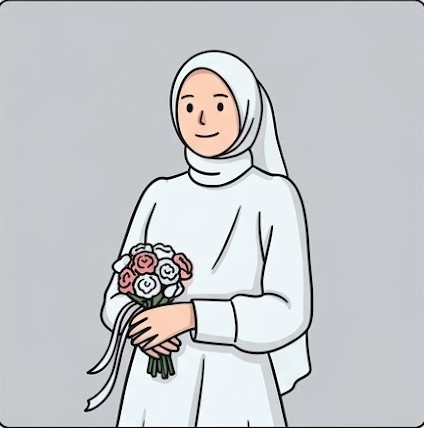

Baralek Gadang
Tanti Khairani Siregar, S.Ag
&
Isnan Rosidi Harahap, S.Ds
"Dan di antara tanda-tanda (kebesaran)-Nya ialah Dia menciptakan pasangan-pasangan untukmu dari jenismu sendiri, agar kamu cenderung dan merasa tenteram kepadanya, dan Dia menjadikan di antaramu rasa kasih dan sayang."
(QS. Ar-Rum: 21)
Sabtu, 28 Maret 2026

Anak Daro & Marapulai

ANAK DARO
TANTI KHAIRANI SIREGAR, S.Ag
Putri dari Bapak Mhd. Soleh Siregar & Ibu Rosdiana Daulay
Instagram
MARAPULAI
ISNAN ROSIDI HARAHAP, S.Ds
Putra dari Bapak Alm. Solahuddin Hrp & Ibu Nur Hawani Siregar
InstagramKisah Cinta
Awal Bertemu
Pertemuan tidak ada yang kebetulan di dunia ini, semua sudah tersusun rapi oleh Sang Maha Kuasa. Bertemu tanpa sengaja pada pertengahan Oktober 2025, tidak ada yang menyangka bahwa pertemuan itu membawa kami pada suatu ikatan suci...
Momen Lamaran
Dengan keyakinan yang kuat dan restu dari kedua belah pihak keluarga, kami mengikat sebuah janji dalam prosesi lamaran pada 12 Desember 2025...
Pernikahan
Kini dengan niat yang sama dan doa yang menyertai, kami memilih untuk menyempurnakan perjalanan ini dalam ikatan suci pernikahan sebagai awal baru untuk berbagi hidup bersama...
Waktu & Lokasi Acara
Akad Nikah
Jum'at, 27 Maret 2026
Pukul 14.00 WIB - Selesai
Kediaman Mempelai Wanita / Bagas Godang Mhd. Soleh Siregar
Pesta Resepsi & Adat
Sabtu, 28 Maret 2026
Pukul 08.00 WIB - Selesai
Kediaman Mempelai Wanita / Bagas Godang Mhd. Soleh Siregar
Hitung Mundur

Turut Mengundang
Keluarga Anak Daro (Wanita)
Mhd. Soleh Siregar (Ayah)
Rosdiana Daulay (Ibu)
Keluarga Marapulai (Pria)
Alm. Solahuddin Hrp (Ayah)
Nur Hawani Siregar (Ibu)
Kado Digital
Doa Restu Anda merupakan karunia yang sangat berarti bagi kami.
Namun jika ingin memberi tanda kasih, dapat melalui:
Bank BRI : 0123456789
A/N: Tanti Khairani Siregar
Ucapan & Doa Restu
Berikan ucapan manis untuk kedua mempelai
"Kehadiran serta doa restu Bapak/Ibu/Saudara/i merupakan kehormatan bagi kami."
Tarimakasih Banyak